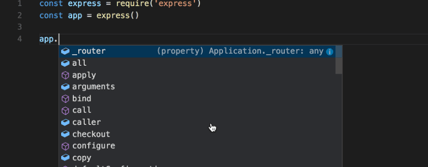
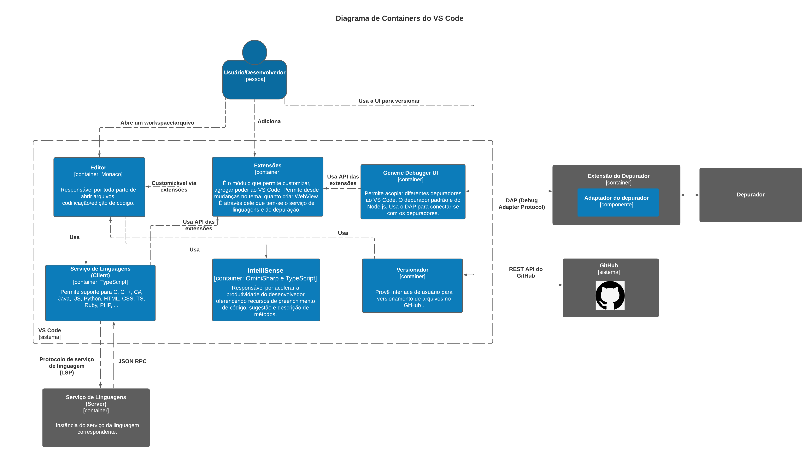

Documentação Arquitetural do VS Code
Autores
Este documento foi produzido por Gabriel Almeida Azevedo.
- Matrícula: 116210009
- Contato: gabriel.almeida.azevedo@ccc.ufcg.edu.br
- Projeto documentado: https://github.com/microsoft/vscode
Descrição Arquitetural do VS Code
Este documento descreve a arquitetura do projeto VS Code. Essa descrição foi baseada principalmente no modelo C4.
É importante destacar que não será descrita toda a arquitetura do VS Code. O foco aqui é a descrição do seu núcleo central, parte fundamental do projeto. Componentes satélites como o Chrome Debug Core, NLS Tools, CSS/LESS/SCSS Language Service e ESLint possuem seu próprio repositório e não serão abordados profundamente neste documento. Para ver a lista completa de projetos relacionados acesse o link Related Projects.
Descrição Geral sobre o VS Code
O Visual Studio Code, ou simplesmente VS Code, é um editor de código que foi lançado em 2015 pela Microsoft. É uma ferramenta de código aberto voltada para o desenvolvimento de aplicações web, mobile e de cloud. O Visual Code se baseia no Electron (framework usada para desenvolver aplicativos Node.js). O seu conjunto de utilitários faz com que ele concorra de igual para igual com ferramentas pagas existentes no mercado.
Seus pontos de Destaque são:
- É Multiplataforma;

-
É Multilinguagem: Suporta mais de 30 linguagens de programação além de formatos comuns de arquivos;
-
É Personalizável;
-
É uma aplicação leve;
-
Apresenta uma excelente paleta de atalhos: além da seus atalhos, é possível alterar para os atalhos reconhecidos pelo Sublime e pelo Atom;
-
Permite adicionar extensões;
-
Possui o IntelliSense: Recurso de preenchimento de código que permite listar métodos, obter informações de parâmetros, completar palavras.

Objetivo Geral do VS Code
Fornecer um editor de código simples que cubra as necessidades dos desenvolvedores nas 3 fases de desenvolvimento: codificação, criação do artefato e depuração.
Objetivos Específicos
Prover uma ferramenta poderosa para o desenvolvedor, que tenha uma edição de código abrangente, navegação e suporte de compreensão, depuração leve, um modelo de extensibilidade rico e integração leve com ferramentas existentes.
Contexto
O VS Code é uma aplicação que roda em sistemas windows, macOS e Linux. Esta aplicação tem como base para sua UI(interface de usuário), o framework Electron, e interage com o sistema de versionamento do GitHub.

Containers
Através da API de extensões é possível customizar todo o VS Code. Os serviços de linguagem e de depuração são tratados como uma classe especial de Extensões.
O serviço de Linguagens é dividido em 2 partes: o client (extensão VS Code) escrito em JavaScript/TypeScript e o Server (ferramenta de análise de linguagem executada em um processo separado). O Client cria uma instância do Server da linguagem correspondente e se comunica através do LSP. Este serviço permite a experiência de edição para muitas linguagens de programação. Pode-se implementar autocomplete, verificação de erros (diagnóstico), salto para definição e muitos outros recursos de linguagem suportados no VS Code.
Com o serviço de depuração os autores de extensão podem integrar facilmente depuradores ao VS Code. O VS Code provê uma interface de usuário comum à todos eles.
A interface de versionamento de arquivos permite criar/trocar de branch, adicionar/remover arquivos à um commit, solucionar conflitos, atualizar a branch remota, entre outras funcionalidades.

Componentes
Vale salientar que o VS Code é uma aplicação grande. Foi escolhido apenas 2 containers para serem expandidos e, ainda assim, só uma amostra dos seus componentes está no diagrama.
Abrindo o container de Extensões tem-se como principais componentes o Extension Gallery Service que provê a listagem de extensões disponíveis para usuário juntamente com suas descrições e changelogs. A partir dessa listagem o usuário pode escolher fazer o download de uma extensão. O componente responsável por este papel é o Extension Downloader que baixa a extensão desejada e repassa os arquivos para o Extension Management Service que por sua vez tem a responsabilidade de averiguar se a extensão é confiável, realizar sua instalação e registro.
O container do Editor possui vários componentes mas sem dúvida o Text Change faz parte do seu núcleo. Ele é responsável por realizar toda e qualquer alteração nos arquivos e interage fortemente com o componente Diff Computer. Ambos componentes são utilizados pelo versionador do VS Code. Existe ainda o Cursor Delete Operations Controller e o Find Controller que invocam o Text Change para realizar as alterações/remoções de código.

Código
Nesta etapa não faremos diagramas que apresentam detalhes da implementação. Faremos isso mais adiante.
Visão de Informação
O container responsável pela parte de edições e versionamento de arquivos é o Editor.
Para o diagrama de estados de um Arquivo no VS Code, tem-se 3 possibilidades iniciais: criar um arquivo, editar um arquivo ou ainda remover um arquivo.
Pontos que devem ser mencionados:
- Ao criar um arquivo e definir sua extensão o VS Code invoca o Serviço de Linguagens para verificar se já existe em seu ambiente uma conexão com o server da extensão do arquivo criado;
- Ao editar um arquivo, pode-se alterar o código manualmente, usar atalhos de cursor, o que envolve seus respectivos controllers (ex: Cursor Delete Operations Controller) e o find/replace. Cada um desses modos invocará o componente Text Change para efetivar a mudança;
- Sempre que tenta-se excluir um arquivo que está aberto ou em raschunho, o VS Code pergunta se essa ação deverá ser realmente realizada, se sim, ele exclui o arquivo e fecha sua janela de edição;
- Pode-se, ou não, usar o VS Code para versionar seu arquivo. Isto é feito através do componente Versionador (trata questões de branch, diffs, commits, conflitos, pull/pushs e merges) que se integra ao GitHub.

Contribuições Concretas
Até o presente momento ainda não foi aberto nenhum pull request desta documentação para o repositório de docs do VS Code.